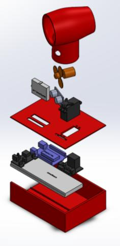
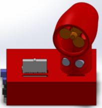
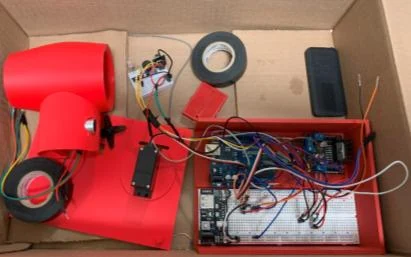

Work / Mechanical Design & Product Development
Over-engineered fan: integrated Arduino control
A deliberately over-engineered fan, built to practice integrating sensing, control, and actuation in a single mechanical package.
- Organization
- The Ohio State University, ME2900
- Role
- Course project
- Dates
- January – February 2025
- Status
- Complete
- Category
- Mechanical Design & Product Development
Key results
5
Distinct control functions in a fully integrated, remotely configurable fan
Demonstrated
- Demonstrated
- Observed in a working prototype.
Objective
- Develop an Arduino-controlled fan system that integrates multiple sensing, control, and actuation modules.
- Expand a basic fan into a user-configurable system with speed, direction, and angle control.
Design and integration
The system combines an Arduino Uno, an IR remote, an ultrasonic sensor, a DC motor, a servo, and the fan assembly. The control logic coordinates multiple inputs and outputs through a single interface.
- Variable speed: user-defined speed adjustments with smooth transitions.
- Distance-based control: ultrasonic sensing automatically adjusts fan speed based on the user's distance.
- Rotational control: user-selectable forward and reverse rotation.
- Angle control: remote-controlled positioning from −45° to +45°.
- Automatic oscillation: programmed side-to-side angular motion.






Result
A working prototype with five distinct control functions, demonstrating practical application of sensors, actuators, embedded control, and system integration.

Tools and methods
- SOLIDWORKS
- Arduino Uno
- IR remote and ultrasonic sensor
- DC motor and servo